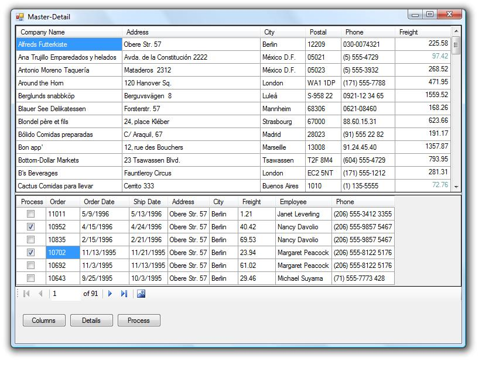

Basics of manually creating a Master-Detail view of a backend database
Introduction
Most examples for developing a master-detail view of data within a database is done using data wizards in the IDE of Visual Studio while the project presented shows how to create a master-detail view using code, no wizards. This is done in a solution comprised of three projects, a windows form project to display data, a class project for retrieving data and a class library for language extensions. Even thou the demonstration could had been done with a single windows form project I wanted to show how you can breakup logic parts of a project and separate them into child projects for use in other projects.

Building the Sample
Once you have downloaded the code simply load the solution into Visual Studio, select rebuild then run the windows form project.
Description
I start using a singleton class for opening a connection to the backend MS-Access 2007 database, which is called from a class, which populates our master-detail structure into a DataSet. A relationship is setup between two tables, customers and order using the DataRelation class contained in a language extension, which creates the relationship name by concatenating the table names together. Within the above processes, a DataColumn expression is created to reach down into the detail table (orders) to get the sum of specific column freight and display this in the parent DataGridView. All of this is done in a separate DLL project which returns (exposed thru two properties of the class) two BindingSource components, which become the DataSource for the DataGridView controls for displaying data. If there are issues loading the data a message dialog is displayed showing what the problem was. As delivered, the only issue would be having one of the tables opened in design mode (which I did often). Now you have a master-detail view of the data.
The next thing to consider is “how do I access this data via code to allow adding/editing/deleting?” This is shown in several procedures in the main form of the windows project. Out of the two sections of code showing examples to access data the button cmdProcess is the best to start with. Now to keep things simple I purposely did not get into data binding past the DataGridView controls, working DataTable events or BindingSource component events. Hopefully for those who are interested in learning the basics of master-detail view via code, not wizards this is a good place to start. Some might want to know how to go deeper down the rabbit hole for say Customers, Orders, OrderDetails, Items etc. That is not difficult but beyond the scope of this article as it would cloud the basics.
I believe that using support projects as done in this solution is a good idea of there is even a remote possibility of reusing code.
Caveats
- The backend database uses data from an old NorthWind database which I placed three tables from NorthWind into the MS-Access 2007 database. The original Northwind database had a funky primary key for customers which I kept but not used. Instead a new auto-incrementing column was added to customers and orders. A small class was used to move the new identifier from customers to each order, the class remains and if you attempt to use it will throw an exception in the new constructor which warns not to use it. If you remove the code in the constructor and run the method note I did warn you.
- The connection string for access the backend database is hard-coded. I never recommend this method for a live project but instead store the connection string in a configuration file. I hard-coded the connection string to keep focus on the master-detail code not the connection setup.
- A special DataGridView column is used for one of the detail date columns which allows users to use a calendar to enter dates, much better than having to validate user input.
- A DataColumn is added to the detail DataTable of type Boolean with code to show how to access the field in the main form. The idea is two-fold, how to access data in the child table and also a simple example of the start of a process, in this case processing some orders.
More Information
07/2013 I recently did an article on filtering, BindingSource Find and Filtering basics. Although the solution is in VS2012 the underlying code conforms to VS2010 standards so if you do not have VS2012 simply create new projects and copy my files into them.
09/2013 If the above was helpful check out my article Simple data binding and add/editing data on windows forms
10/2012 Modified the solution (see readme file) included with this article to assist with working with a child form to do consitions on SkyDrive here.
Screenshot for solution on SkyDrive.

10/2012 Modified the solution (see readme file) included with this article to assist with working with detail data and gave it a home on SkyDrive here
Screenshot for solution on SkyDrive.